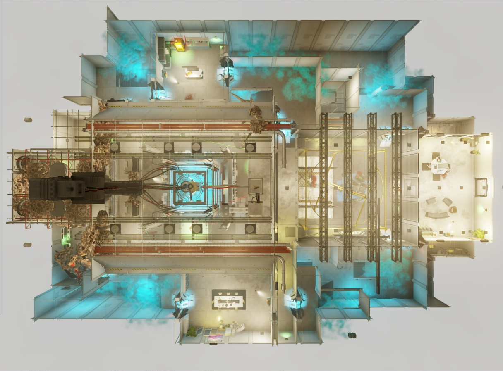
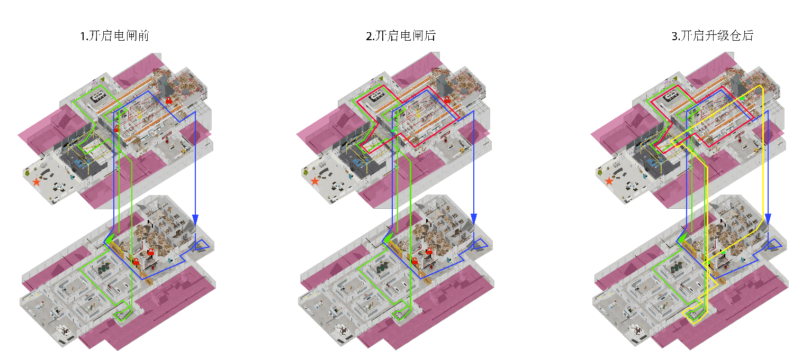
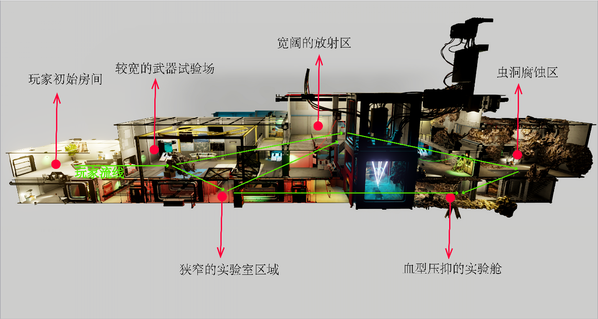
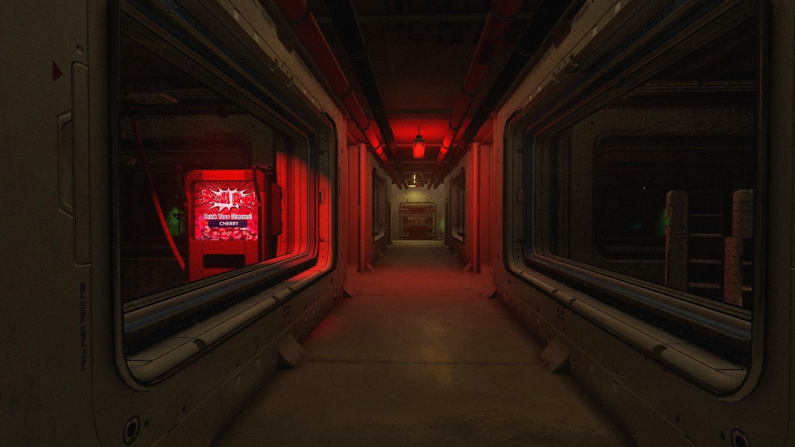
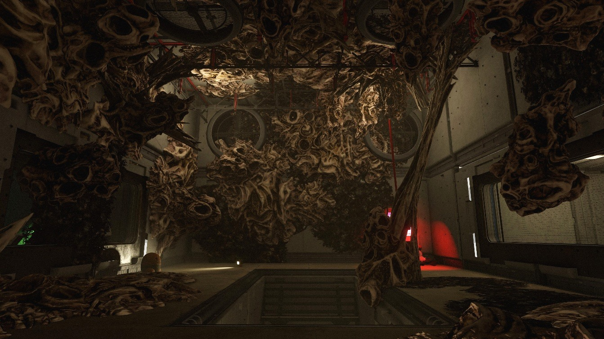
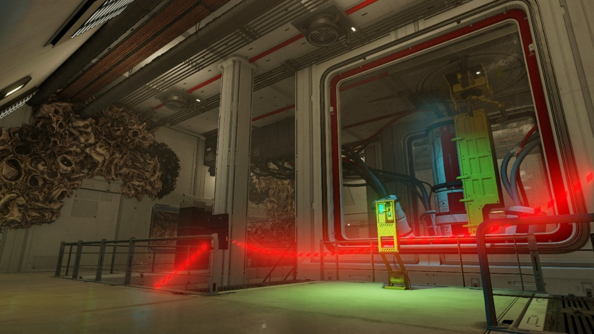
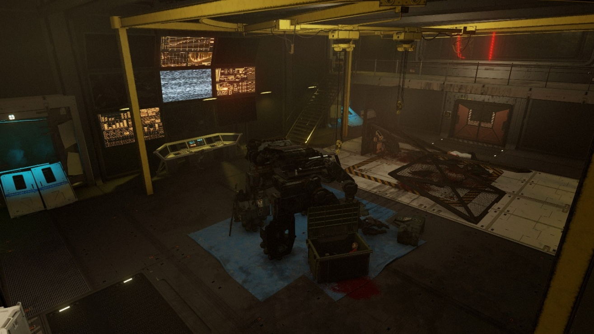
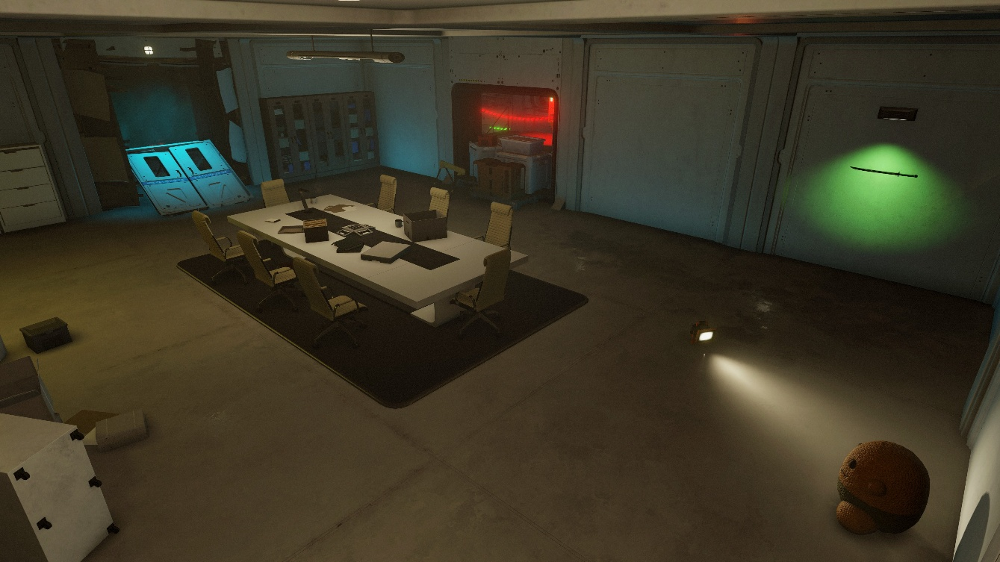
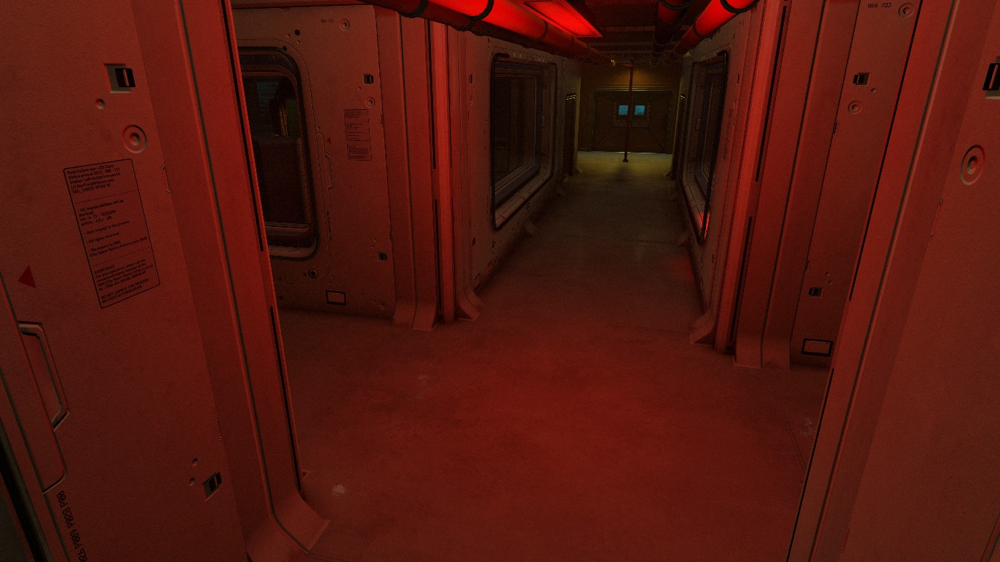

Containment Breach
Multi-Stage Dynamic Loop Design and Scripting
Project at a Glance
My Core Work
- Designed expanding three-dimensional loops and combat pacing before and after power activation.
- Scripted power, traps, area unlocks, and weapon upgrades.
- Balanced weapons, resources, and enemy pressure for an approximately one-hour run.
Overview
This level was built with the Starfield Creation Kit and draws on the core Call of Duty Zombies loop of exploration, power activation, area unlocking, weapon progression, and continuous survival. Before the power is restored, the player primarily faces small, narrow, constrained, and high-risk loops. Restoring power activates traps and safer circulation routes. Opening the route to the weapon-upgrade machine gives the player more room to move and more stable combat conditions. The level studies changes in loop structure, combinations of wide and narrow spaces, the effect of spatial scale on psychological pressure, environmental sightline guidance, and weapon and resource balance. Power, traps, area unlocks, and upgrades are implemented through scripting.
Level Layout


Goal 1: Designing a Map Structure That Drives Exploration
Defining the Zombies Experience and Core Loop

The loop works structurally, but its narrow exits reduce route tolerance and prevent the player from using it reliably over time.
Stage 1: Before Restoring Power
Before the power switch is activated, I intentionally limit the player's ability to establish a stable loop. The starting area is composed mainly of small loops, one-way routes that push deeper into the facility, and high-risk circuits. Some routes technically form loops, but their narrow passages and blind corners allow growing enemy groups to intercept the player at entrances and turns. As enemy health increases, the weapons available in the early area also become less effective, pushing the player into new spaces in search of stronger weapons. This structure prevents the player from safely repeating the same circuit during the early game. Survival depends on reading enemy positions, judging when to retreat, and finding entrances to new areas, which creates motivation to locate the power switch and expand the map.

Restoring power adds a new loop that connects the two original circuits.
Stage 2: After Restoring Power
Once power is restored, the map changes from a restricted structure centered on exploration and survival into a combat space that supports enemy grouping and route management. New passages connect previously separated local spaces and form a primary loop that alternates between wide and narrow areas. The wider spaces give the player room to observe, gather enemies, and change direction, while the narrow spaces retain the risk of interception. At the same time, the trap system activates, allowing the player to plan enemy movement and connect spatial circulation with resource spending and crowd management. Perk machines also activate after power is restored, encouraging the player to visit different corners of the map to strengthen their character for later waves.
Stage 3: After Opening the Weapon-Upgrade Route
After repeatedly entering the dangerous, narrow basement laboratory, the player uses collected batteries to open the route to the weapon-upgrade machine. This progression grants more than an upgrade facility: it also unlocks a large loop connecting several areas. Compared with the localized early-game loops, this route has greater capacity and more choices, allowing it to accommodate the larger enemy groups of later waves. I placed weapon progression and spatial expansion at the same milestone so the player's combat power and movement capacity grow together. Higher damage is paired with the space needed to handle greater enemy density, keeping map growth aligned with numerical progression. At this point, all four loops become fully connected again, creating a three-dimensional circulation system that produces a tense, exhilarating escape when swarms flood the facility.

Goal 2: Using Spatial Proportion to Create Different Psychological and Combat Experiences
Architectural Scale
I introduced architectural spatial-proportion metrics and controlled the relationship between height and floor area. This creates distinct spatial types while producing different psychological experiences for the player.




Experiment Chamber and Wormhole Areas
The contrast between towering and compressed spaces creates a distorted sense of scale, making the environment feel both unknown and unstable.


Building Spatial Atmosphere
Set Dressing
- Place equipment, furniture, pipes, and experimental apparatus according to each area's function to establish a clear spatial identity.
- Use dressing density to control psychological pressure: reduce occlusion in open areas, while adding equipment and obstacles to narrow laboratories so they feel more crowded and dangerous.
- Use damage, contamination, and traces of experiments to extend the environmental narrative and imply that the facility gradually fell out of control.

Landmarks
- Place landmarks with distinct silhouettes, scale, or color at important nodes to help the player identify their current location.
- Make landmarks visible in advance from multiple paths so they provide directional goals during exploration.
- Turn core functions such as the power switch, experiment chamber, and weapon-upgrade area into unique landmarks, combining functional recognition with route guidance.

Lighting
- Use light-dark contrast to establish a visual hierarchy so important entrances, interactive devices, and the forward route attract attention first.
- Use distinct lighting moods to communicate area states and danger levels.
- Increase shadow and localized lighting in narrow areas to create uncertainty; expand visibility in primary combat spaces to keep enemy information readable.
- Change the lighting before and after power restoration to provide clear feedback that the map state has changed.

Goal 3: Arranging Cover and Routes Within Rooms
Circulation Around Cover
Cover acts as a spatial node at the center of a room, allowing the player to move around it instead of being forced to remain in one position.
The distance between cover and surrounding walls controls route width and creates space for circling, kiting, and emergency breakouts.


Cover must not become an absolute safe point. It only blocks sightlines temporarily, so the player must keep moving.
Crossroads and T-Junctions
A T-junction presents two clear directions, making it useful for controlling pacing and guiding route choice with a landmark, weapon, or facility at the end of a sightline.
A crossroads increases both observation directions and route choices while raising the risk of being surrounded from multiple sides, creating greater information-processing pressure.


Goal 4: Balancing Weapon Values
I used Excel to calculate TTK, STK, damage, price, and related values. This ensures that the player acquires stronger weapons while exploring and that weapon progression keeps pace with increasing enemy health.